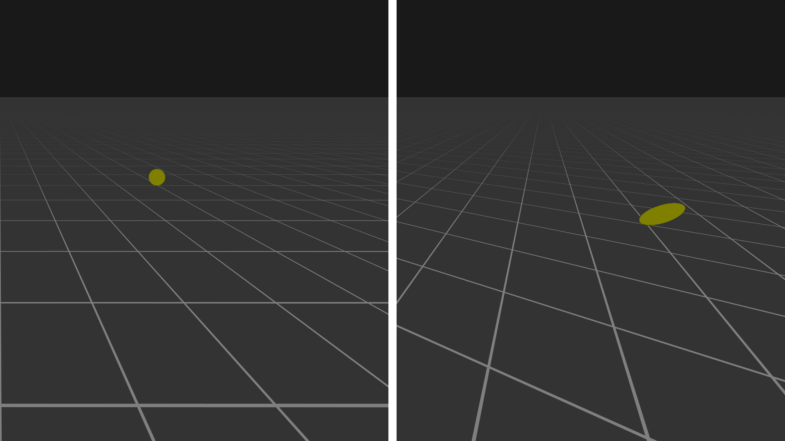

April 2024
A while back I was working on implementing grid rendering for the 3D viewport for Oak Engine. Instead of going through the pain of generating thick line geometry for the grid lines I decided to try to render a plane using a shader to procedurally generate the grid pattern. I had used SDF textures before, and thought they would be a good fit for this problem. Due to the grid pattern being very simple it would be possible to sample a small implicit function instead of a texture. The function I ended up using looks something like this:
float sample_grid(vec2 uv, float lineWidth) {
vec2 t = abs(mod(abs(uv), vec2(2.0))-1)-1.0+lineWidth*0.5;
return -max(t.x, t.y);
}
float compute_sdf_alpha(float SDF, vec2 uv, float invPixelUVWidth) {
return clamp((-SDF*invPixelUVWidth) + 0.5, 0, 1);
}
Interpolating the grid alpha based off of the gradient of the SDF is an improvement to the previous approach. Unfortunately, at low viewing angles, the problem persists. Enabling anisotropic filtering in the texture sampler parameters would be a resonable approach to get the desired quality. In this instance, since the texture is software defined, we don’t have the luxury of relying on the hardware sampler, and so we’ll need an alternative solution to the problem. I did some research looking for any info on how modern GPUs implement anisotropic filtering, hoping to replicate the behavior in software. Eventually, I stumbled across an algorithm called Elliptical Weighted Average (EWA) sampling.
In order to compute a pixel’s final color we need to know which texels contribute to that color. If the rate of change of the texture coordinates matches the rate of change of the pixel coordinates, point sampling the texture will produce the correct result. If the rates of change don’t match, we will need to compute a convolution of texels within a certain area to remove aliasing artifacts. EWA solves this problem by computing the Gaussian convolution of the texels within an elliptical area. The elliptical area is the projection of the circular footprint of a pixel onto a plane tangent to the surface the texels lay on.
 The same area shown from two different angles. The left view is rendered from the camera’s perspective, the (scaled) circular pixel footprint can be seen. The right view is rotated to show the projected elliptical area of that scaled pixel. The texels inside the elliptical area contribute to the color of the pixel.
The final pixel color can be computed by sampling all of the texels inside of the ellipse and computing a weighted sum of those sample values. The weights come from a filter function. Ideally a Gaussian filter function is used, however a more efficient filter function such as a box filter can be used if performance is favored over quality. The texels inside of the ellipse satisfy the implicit equation
$$p^TQ'p \leq 1\quad where\quad p = \begin{bmatrix}\Delta u \\ \Delta v\end{bmatrix}$$
Q' is the coefficient matrix for the ellipse, the derivation is shown in the next section.
Evaluating this equation for all pixels would be too expensive, instead we compute the bounding box of the ellipse and only sample texels within that rectangle.
In my implementation I sample texels along the ellipses major axis using a linear filter. The quality of this technique is reduced compared to using a full Gaussian filter; however, it vastly reduces the number of texture samples needed. If the implementation has access to texture pre-convolution data (mipmaps), using linear weighted samples will produce high quality results for the performance cost.
The first step in computing the bounding box is to represent both the circle and ellipse using the following quadratic form:
$$p^TQp = F\quad where\quad Q = \begin{bmatrix} A & \frac{B}{2} \\ \frac{B}{2} & C \end{bmatrix},\quad p=\begin{bmatrix}x\\y\end{bmatrix}$$
A, B, C, and F are the coefficients of an implicit equation for a conic section centered on the origin, Q is the conic matrix.
A circle has the conic matrix
$$Q = \begin{bmatrix} 1 & 0 \\ 0 & 1 \end{bmatrix}$$
forming the well know implicit equation
$$\begin{bmatrix}x&y\end{bmatrix}\begin{bmatrix} 1 & 0 \\ 0 & 1 \end{bmatrix}\begin{bmatrix}x\\y\end{bmatrix} = x^2 + y^2 = F$$
In order to compute the conic matrix for the resulting ellipse the circle’s equation can be transformed using the matrix M.
$$p' = Mp$$ $$M^{-1}p' = p$$
The ellipses implicit equation is then
$$p'^TQ'p' = F'$$
We substitute the previous linear transformation formula into the implicit equation for the transformed ellipse. Since the implicit ellipse equation is invariant up to a scalar factor, we can also normalize the equation so that F is equal to 1.
$$p'^T{M^{-1}}^TQM^{-1}p' = F$$ $$p'^TQ'p' = F' = F$$ $$Q' = {M^{-1}}^TQM^{-1}$$
M is a linear transform from texture space to pixel space and can be computed using the partial derivatives of the object’s uv coordinates.
$$M = \begin{bmatrix} \frac{\partial u}{\partial x} & \frac{\partial v}{\partial x} \\ \frac{\partial u}{\partial y} & \frac{\partial v}{\partial y} \end{bmatrix}$$
Now that we have computed the ellipse in it’s implicit form, the next step is to convert it into it’s parametric form. We choose two perpendicular basis vectors to represent the major and minor axis of the ellipse. Together these form the Jacobian matrix we’ll call M'.
$$M' = \begin{bmatrix}u_x & v_x \\ u_y & v_y\end{bmatrix}$$
That looks exactly like the M matrix we just computed above, and that is almost true. Both matrices represent a basis for the ellipse; however, the column vectors of the M matrix are not necessarily the orthogonal basis vectors representing the major and minor axis we are trying to compute. By using some mathematical pattern matching, we can use the implicit conic matrix Q' we calculated along with some matrix diagonalization to compute the final matrix M'.
$$Q' = {M'^{-1}}^TM'^{-1}$$
Q is the identity matrix so we can omit it here
Because we want to restrict the degrees of freedom of the matrix M' so that the basis is orthogonal we should write M' in the form
$$M'^{-1} = \Lambda R = \begin{bmatrix}a & 0 \\ 0 & b\end{bmatrix}\begin{bmatrix}\cos\theta&\sin\theta\\-\sin\theta&\cos\theta\end{bmatrix}$$ $$Q' = {M'^{-1}}^TM'^{-1} = R^T\Lambda^T\Lambda R = R^T\Lambda^2R$$
We can use matrix diagonalization to compute R which ends up being the matrix of unit eigenvectors of Q' and Lambda, which is the square root of the matrix of eigenvalues.
$$Q' = SJS^{-1} = R^T\Lambda^2R,\quad R=S^T,\quad \Lambda=J^{\frac{1}{2}}$$ $$\Lambda=\begin{bmatrix}\sqrt{\frac{q+t}{2}}&0\\0&\sqrt{\frac{q-t}{2}}\end{bmatrix}$$ $$R=\begin{bmatrix}\sqrt{\frac{t+p}{2t}}&\sqrt{\frac{t-p}{2t}}\\-\sqrt{\frac{t-p}{2t}}&\sqrt{\frac{t+p}{2t}}\end{bmatrix}$$ where $$p=A-C,\quad q=A+C,\quad t=\sqrt{p^2+B^2}$$
After working out all of the equations we end up with
$$M'^{-1}=\begin{bmatrix}\sqrt{\frac{(q+t)(t+p)}{4t}}&\sqrt{\frac{(q+t)(t-p)}{4t}}\\-\sqrt{\frac{(q-t)(t-p)}{4t}}&\sqrt{\frac{(q-t)(t+p)}{4t}}\end{bmatrix}$$
Visualizing the transformation from M to M' using Desmos gives us some intuition into what the process is doing
Drag the green and red points to change the shape of the ellipse. The green and red points are the columns of the matrix M; the blue and orange points are the columns of the matrix M'. The purple circle represents our pixel and the black ellipse represents the projected circle in texture space.
The shader code is almost a direct translation of the above math along with some checks for making sure the basis vectors are in the right quadrant. The primary function computes the delta uv vector along the major axis of the ellipse. The resulting values can then be used to sample N samples of the source texture, averaging the results to calculate the final color.
void anisotropic_ewa_rect(
vec2 uv,
float maxAniso,
out float numSamples,
out float uvDelta) {
vec4 grad = vec4(dFdx(uv), dFdy(uv));
// Compute Q' matrix coefficients
float A = grad.y*grad.y + grad.w*grad.w;
float B = 2.0*(grad.x*grad.y + grad.z*grad.w);
float C = grad.x*grad.x + grad.z*grad.z;
// Normalize values so that F = 1
float F = A*C - B*B/4.0;
A /= F;
B /= F;
C /= F;
float p = A - C;
float q = A + C;
float t = sign(p)*sqrt(p*p + B*B);
// Columns of M'
vec2 x0, x1;
if (t == 0.0) {
// Circle case
x0 = vec2(1.0 / sqrt(A), 0.0);
x1 = x0.yx;
} else {
// General case
float s = 1.0/(4.0*t);
float qat = q+t;
float qmt = q-t;
float tap = t+p;
float tmp = t-p;
x0 = vec2(
sqrt(qat*tap*s),
-sign(B*p)*sqrt(qmt*tmp*s)
);
x1 = vec2(
sign(B*p)*sqrt(qat*tmp*s),
sqrt(qmt*tap*s)
);
// Could be optimized to analytically compute the inverse given
// the coefficients, an exercise for the reader :)
mat2 M = inverse(mat2(x0, x1));
x0 = M[0];
x1 = M[1];
}
// Major and minor axis
float l0 = length(x0);
float l1 = length(x1);
vec2 axisMaj = x0;
if (l1 > l0)
axisMaj = x1;
float lMaj = max(l0, l1);
float lMin = min(l0, l1);
// Compute output parameters
numSamples = min(lMaj/lMin, maxAnisoSamples);
uvDelta = axisMaj/numSamples;
}
vec4 sample_anisotropic(vec2 uv) {
const float maxSamples = 32.0;
float numSamples;
vec2 uvDelta;
anisotropic_ewa_rect(uv, maxSamples, numSamples, uvDelta);
vec4 color = vec4(0.0);
for (float i = 0.0; i < numSamples; i += 1.0) {
color += evaluate_sdf(uv + uvDelta*i);
}
color /= numSamples;
return color;
}
[1] Implementing trilinear/anisotropic in the pixel shader
[3] High quality elliptical texture filtering on GPU
[4] Heckbert, Paul & Heckbert, C. (1998). Fundamentals of Texture Mapping and Image Warping.